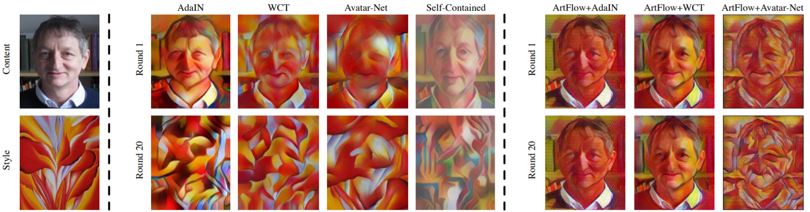
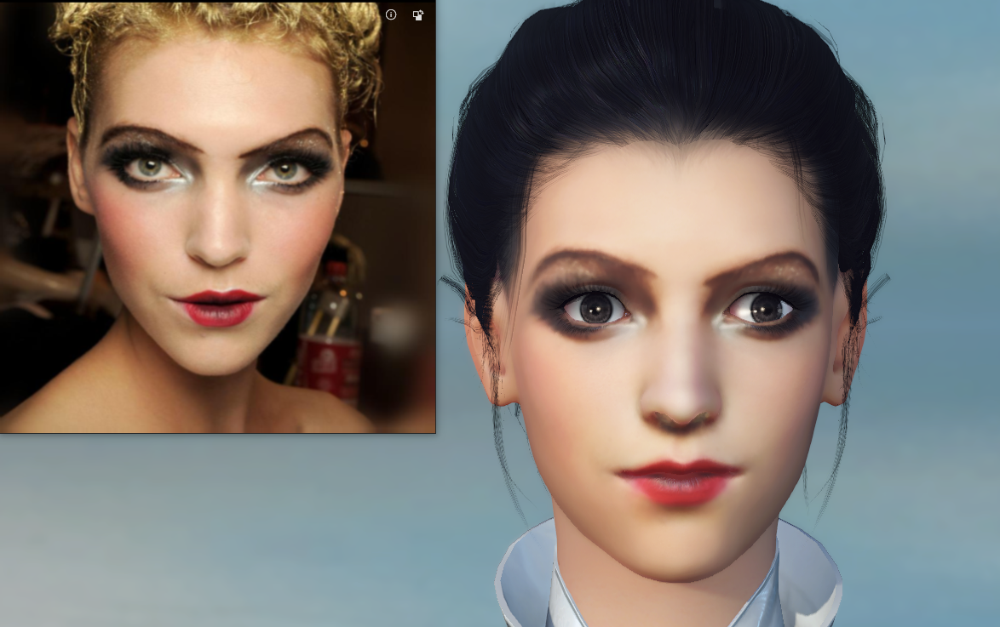

Новости
16 апреля
2021Новости

Новый алгоритм многослойной нормализации значительно увеличивает
точность распознавания эмоций по сигналу электроэнцефалограммы (ЭЭГ) головного мозга. Нормализация
признаков по различным участникам и экспериментам, лежащая в основе метода, позволяет снизить корреляции
между…
14 марта
2021Новости

PF-AFN — это нейросеть, которая генерирует изображения с
примеркой одежды. Модель принимает на вход изображение человека и изображение предмета одежды. На выходе
модель отдает изображение, на котором на целевую персону…
12 апреля
2021Новости

ArtFlow — это фреймворк для переноса стиля изображения без
потерь с помощью обратимых нейронных потоков. Код в открытом доступе на Github.Задача универсального
переноса стиля (UST) позволяет применять к одному изображению стиль другого. Например, можно сделать
фотографию похожей на рисунок известного художника. Использование современных UST-фреймворков, таких как
AdaIN...
5 марта
2021Новости

Исследователи из University of California и Honda Research
Institute обучили робота складывать ткань. Алгоритм основывается на фреймворке для обучения визуальной
динамики объектов на основе RGB изображений, — Visual Foresight. Такие…
15 февраля
2021Новости

MeInGame — это нейросетевая модель, которая генерирует персонажа
в игре по одному изображению лица. Нейросеть предсказывает форму лица и его текстуру. Итоговое
предсказание можно внедрить в большинство существующих 3D игр.…